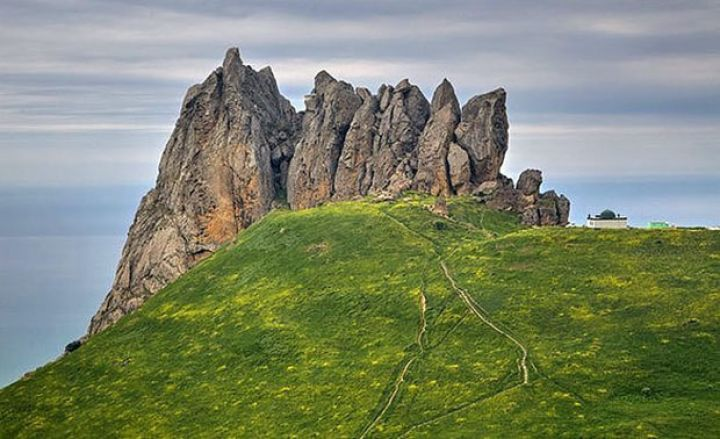
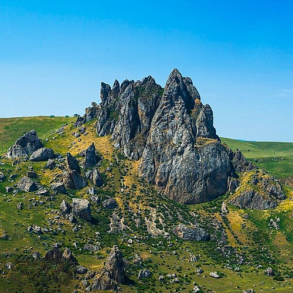
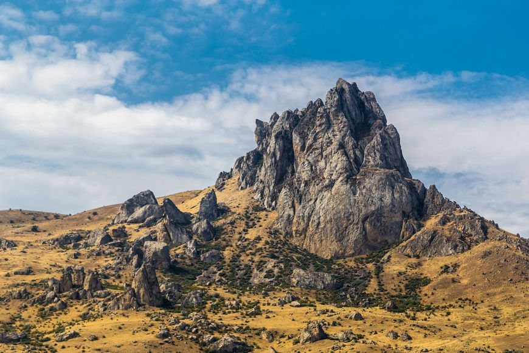
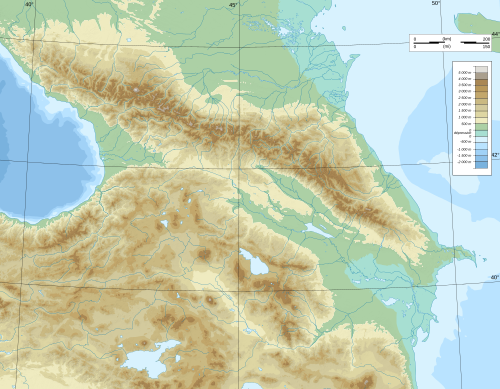
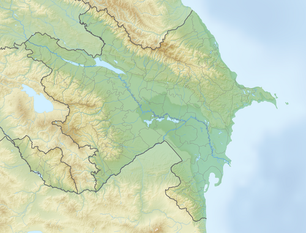
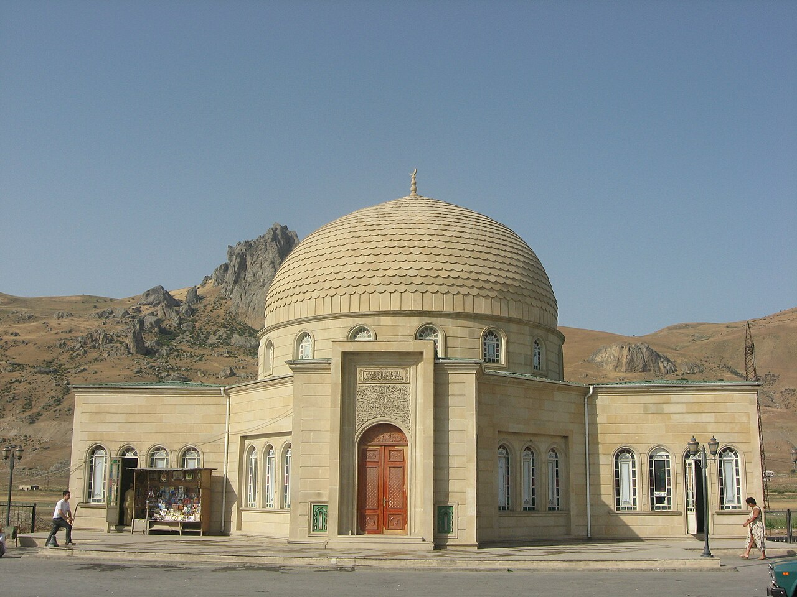

Beşbarmaq dağı və ya Baş Bərmək dağı — erkən orta əsrlərdə Qafqaz Albaniyası dövrü Xors-Xurs qayası adlanan və Xorsvem kimi göstərilən Beşbarmaq tarixi Şeşpara ərazisinin başlanğıcı sayılır. Karbonat tərkibli breksiyalaşmış əhəngdaşlarından (dolomitlərdən) ibarət qaya parçası "səhra aysberqi"ni xatırladır və Bakı-Siyəzən avtomobil yolunun 95 km-də ucalır. Beşbarmaq dağı dəniz səviyyəsindən 445 m yüksəklikdədir. Dağın əmələ gəlməsində ilkin versiyalardan biri kimi tektonik hərəkətlərin təsirindən karbonat tərkibli süxurların sıxılması və nəticədə belə bir mənzərənin yaranması göstərilir. Qaya üzərində çoxlu sayda karst tipli boşluqlara, yuvacıqlara rast gəlmək mümkündür. Qayaya şərq və qərbdən baxarkən o, insan əlində olan barmaqları xatırladır və çox güman ki, elə buna görə də bu qayaya Beşbarmaq adı verilib. Azərbaycan Respublikasının Prezidenti İlham Əliyev 2020-ci il iyunun 8-də “Beşbarmaq dağı” Dövlət Tarix-Mədəniyyət və Təbiət Qoruğunun yaradılması haqqında Sərəncam imzalayıb.
  Bu qayanın digər adı isə Xıdır Zində piridir. Qeyri-adi görünüşü ətraf ərazilərdə yaşayanlar tərəfindən oranın ibadət olunan pirə çevrilməsinə səbəb olmuşdur. Pir Bakı-Siyəzən magistral yolundan 5 km qərbdədir. Magistral yoldan pirə qədər olan torpaq yol yaz-payız fəslində palçıqlı, yayda tozlu, qışda isə sürüşkən olur və gediş-gəlişi çətinləşdirir. Ərazidə su qıtlığı müşahidə olunur, belə ki, qurbanlıq kəsilən yerdə debiti çox az olan cəmi bir bulaq var. Pir ətrafında tək-tək ağaclara rast gəlinir. Ziyarətçilər tərəfindən bu ağacların kölgəsində ocaq yandırıldığından onlar qurumaq təhlükəsi altındadır.
  